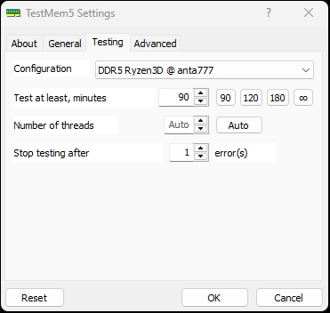

#
testmem5
|
Teste de estresse da memória RAM com perfil para Ryzen no TestMem5.
TESTMEM5

📌 1. Instruções
- Aplicativo (TM5) Executar como Administrador
⚙️ 2. Configuração
- Settings → Testing → Configuration Selecionar o perfil DDR 5 Ryzen3D @ anta777 → OK
✅ 3. Resultado esperado
- Teste de 1 hora 0 erros
O que faz: Executa um teste de estresse isolado e intensivo nos pentes de memória RAM utilizando um perfil especializado para plataformas Ryzen, identificando instabilidades ocultas de frequências ou sub-timings para garantir estabilidade absoluta contra telas azuis (BSOD) e corrupção de arquivos.